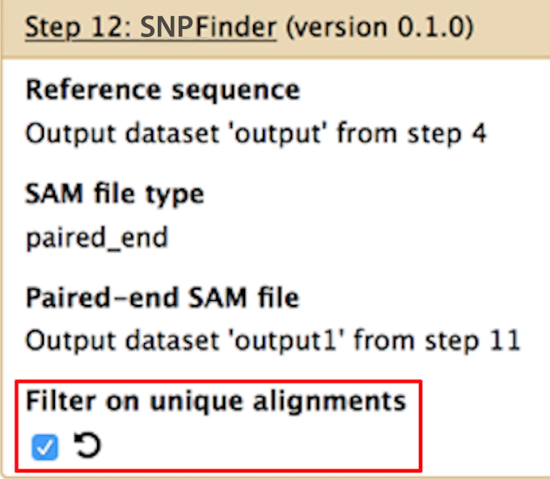
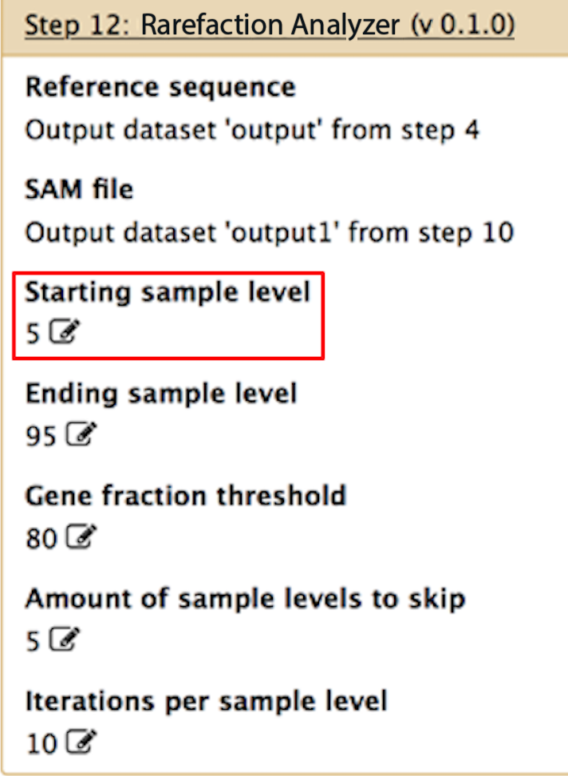
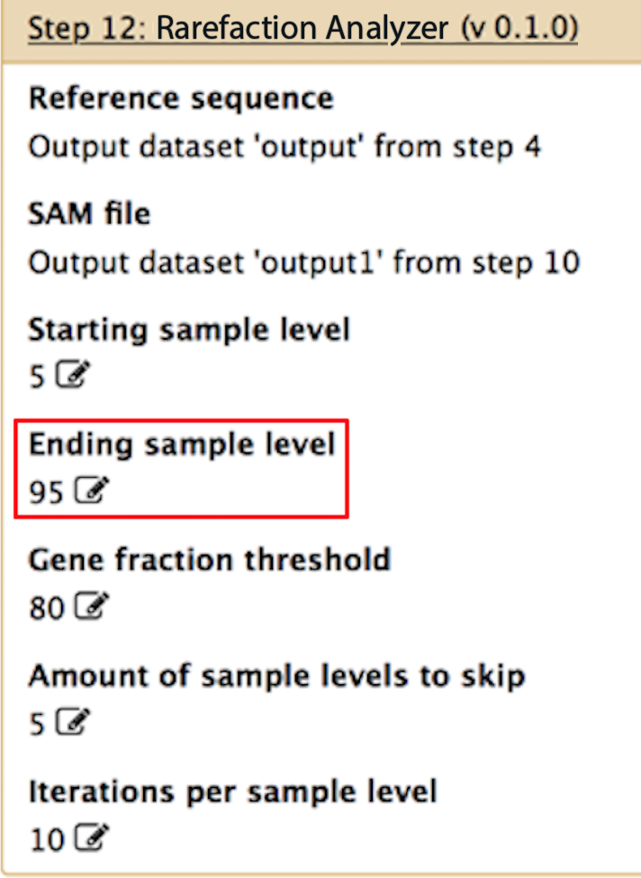
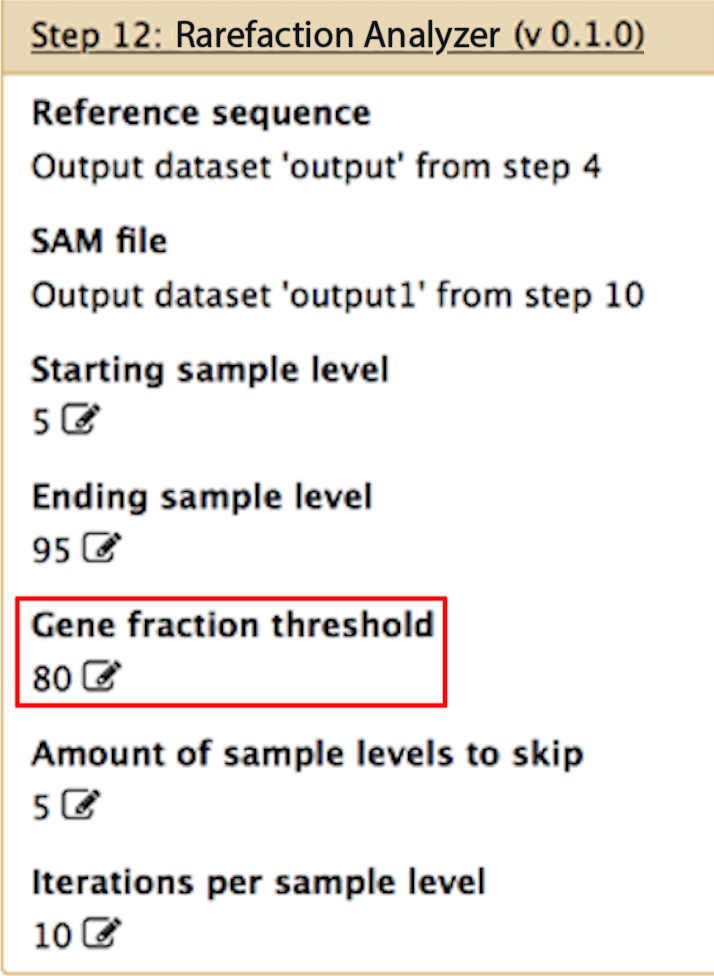
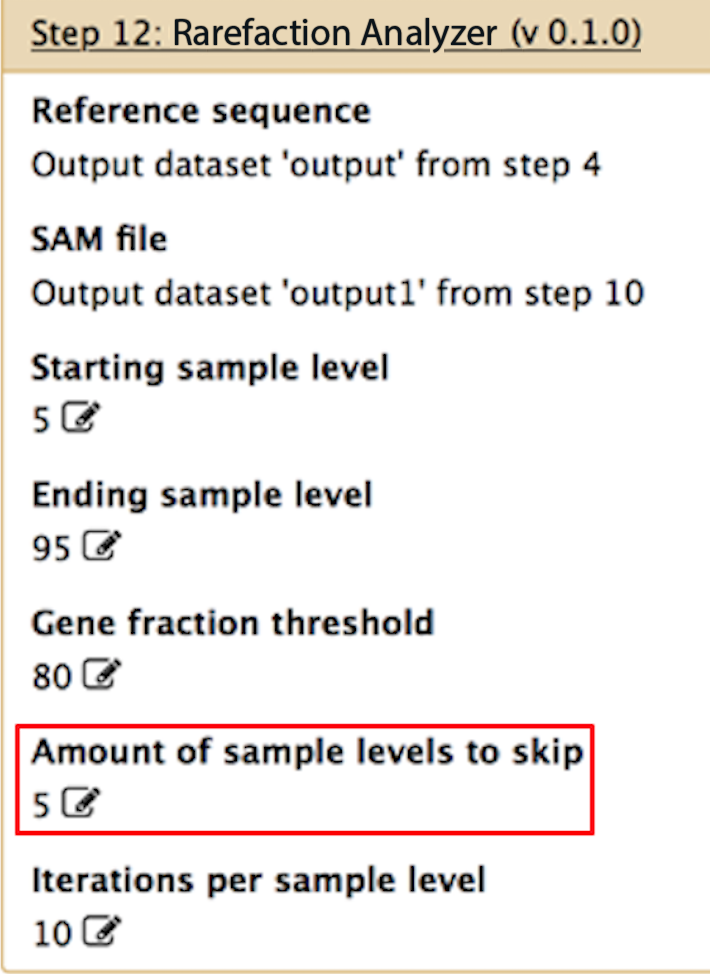
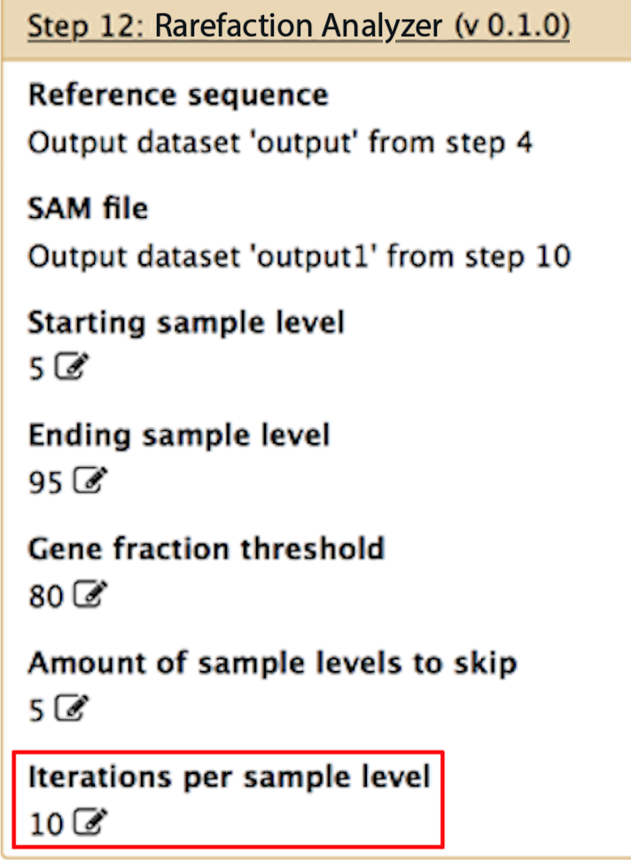

Workflow Parameters
Parameters for each of the workflow components within the AmrPlusPlus pipeline can be customized by the user. Here, we provide detailed descriptions for each of the input parameters for SNPFinder and CoverageSampler.
It may be desirable to set custom inputs for tools like Trimmomatic4 and Burrows Wheeler Aligner5. If you wish to do so, please see the Trimmomatic User Manual, as well as the BWA User Manual before doing so.
SNPFinder
SNPFinder
Filter on unique alignments
SNPFinder only has one user defined parameter. In order to understand this parameter, we need to understand BWA's behavior. When BWA finds a read that aligns equally well to multiple resistance genes, it flags that read as having multiple alignments. By default, SNPFinder will include those reads when identifying haplotypes, however if you want to only consider reads with single alignments, check the box under Filter on unique alignments.

Rarefaction Analyzer
Rarefaction Analyzer
Perform both rarefaction and calculation of gene fraction.
Depending on what type of analysis you want to do, you can change the parameters to fit your needs. Below, we describe some common usage scenarios.
Starting sample level
If you want to perform rarefaction on your data, this would be the lowest rarefaction level. For example, if you want to rarefy your data down to 5% of the total you would input 5. However, if you only want to look at all of the alignments in your data (and not rarefaction), then set this parameter to 100.

Ending sample level
If you want to perform rarefaction on your data, this would be the highest rarefaction level. For example, if you want to rarefy your data from 5% to 95% of the total, you would input 5% for the "starting sample level" and 95% for the ending sample level. However, if you only want to look at all of the alignments in your data (and not perform rarefaction), then set this to 100.

Gene fraction threshold
This is the thresold for identifying "positives" within your sample. For instance, if you only want to identify genes that have at least 1 read aligning to at least 80% of their bases, then you would set this to 80. If you want to identify only those genes that are completely aligned across their entire length, set this to 100. If you want to identify all hits to all genes, then set this to 0.

Amount of sample levels to skip
If you are performing rarefaction, this sets the increments for the rarefaction. For example, if you want to rarefy from 5% to 95% of your data in increments of 5% points, then set this to 5. In this example, you would then get all of the genes identified for 5, 10, 15, 20, ..., 90, 95% of your data. If you only want to look at all of the alignments in your data and not perform rarefaction, then set this parameter to 1.

Iterations per sample level
If you are performing rarefaction, and you want to produce an average for each rarefaction level, you can specify here how many samplings you want to perform at each rarefaction level. For instance, if you set this to 10, and "starting sample level", "ending sample level" and "amount of sample levels to skip" are set to 5, 95 and 5, respectively, then the program will perform 10 unique subsamples of the data at the 5% level, 10 at the 10% level, 10 at the 15% level, etc.. You can then average the output from each subsample at each level in order to get a smooth rarefaction curve for your data.
